写真改善
50代男性がマッチングアプリでいいねをもらえない理由｜年齢だけで諦める前に見直すべきこと
50代男性がマッチングアプリでいいねをもらえない理由を、年齢だけでなく写真・清潔感・プロフィール文・メッセージの見せ方から整理します。

まずは「50代だから無理」と感じてしまう理由から整理しましょう
マッチングアプリを始めてみたけれど、まったくいいねが来ないんです。
こちらから送っても、ほとんどマッチしません。
やっぱり50代男性は、もう恋愛対象として見られないのでしょうか。
そんなふうに感じて、落ち込んでいる50代男性は少なくありません。
たしかに、マッチングアプリでは年齢が影響する場面もあります。20代・30代の男性と同じ土俵で見られれば、50代という年齢が不利に働くこともあります。
ただし、ここで大事なのは、いいねをもらえない理由を「年齢だけ」で片づけないことです。同じ50代でも、きちんとマッチしている男性もいます。
若さを作り込んでいるわけではなく、写真・清潔感・プロフィール・メッセージの見せ方を整えて、女性に安心感や魅力が伝わるようにしているんです。
この記事では、50代男性がマッチングアプリでいいねをもらえない理由と、まず見直すべきポイントを順番に解説します。
50代男性がマッチングアプリでいいねをもらえないのは「年齢だけ」が原因ではない
先生、やっぱり50代男性って、マッチングアプリでは不利なんでしょうか。
プロフィールを見るとき、女性は年齢を確認しますよね。
はい。そこは率直に言うと、50代男性が不利になる場面はあります。
年齢差が大きい相手を避ける女性もいますし、アプリによっては利用者層が若く、50代男性がそもそも見られにくいこともあります。
だから、年齢の影響がゼロだとは言えません。
やっぱりそうですよね。
そうなると、「50代だから無理」「おじさんだから相手にされない」と思ってしまいます。
もう何をしても意味がないのかな、と感じてしまうんです。
でも、そこで「年齢だけ」が原因だと決めつけてしまうのは早いです。
そう決めつけると、本当は改善できる部分まで見えなくなってしまいます。
改善できる部分というのは、写真やプロフィールのことですか？
その通りです。
マッチングアプリでは、女性はあなたの中身をいきなり知ることはできません。
最初に見るのは、写真・年齢・プロフィール文・雰囲気です。
つまり、あなた自身の価値というより、画面上でどう見えているかが大きく影響します。
たしかに、現実の自分が誠実でも、写真が暗かったり、服装がくたびれていたり、プロフィール文が雑だったら、女性には伝わらないですよね。
はい。逆に、特別なイケメンでなくても、写真・清潔感・文章・距離感が整っていれば、「この人なら話してみてもいいかもしれない」と思われる可能性は十分にあります。
50代男性に必要なのは、若者の真似ではありません。
大人の男性として、女性に安心して見てもらえる状態に整えることです。
50代男性がマッチングアプリでいいねをもらえない主な理由
50代男性がマッチングアプリで反応をもらえないとき、よくある原因はいくつかあります。ここでは、特に多いものを順番に見ていきます。
ここからは、助手のさくらが女性目線の補足役として登場します。写真・清潔感・プロフィール文・メッセージが女性にどう見えやすいかを、一緒に確認していきましょう。
理由1：プロフィール写真で清潔感や安心感が伝わっていない
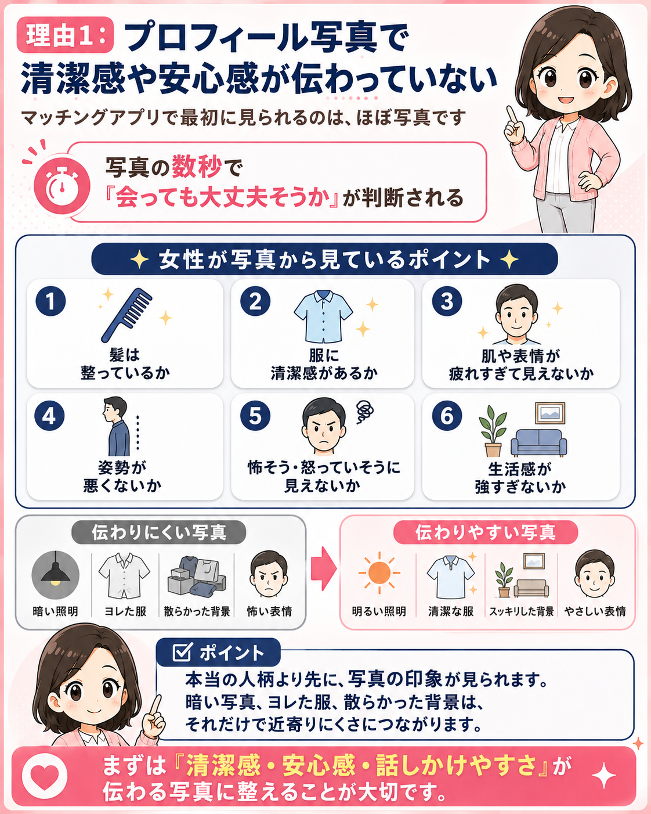
マッチングアプリで最初に見られるのは、ほぼ写真です。プロフィール文をどれだけ丁寧に書いても、写真の時点で違和感を持たれると、そこまで読まれません。
50代男性の場合、女性が写真から見ているのは、単純な顔の良し悪しだけではありません。見られているのは、たとえば次のような部分です。
- 髪は整っているか
- 服に清潔感があるか
- 肌や表情が疲れすぎて見えないか
- 姿勢が悪くないか
- 怖そう、怒っていそうに見えないか
- 生活感が強すぎないか
本当は優しい人でも、写真が暗いだけで近寄りにくく見えます。本当は清潔にしていても、服がヨレていたり、背景が散らかっていたりすると、だらしなく見えてしまいます。
女性は、写真からかなり多くの情報を読み取っています。「この人と会ったら安心できそうか」「清潔感はありそうか」「会話しても嫌な感じがしなさそうか」。そういう判断が、写真の数秒で行われます。
理由2：自撮り・無表情・生活感の強い写真で損をしている
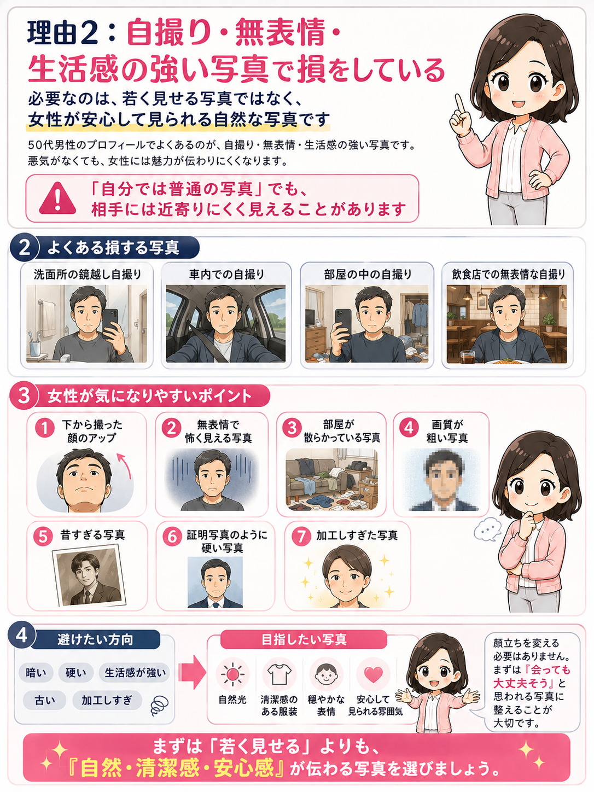
50代男性のプロフィールでよくあるのが、自撮り写真です。洗面所の鏡越し、車内、部屋の中、飲食店での無表情な自撮り。これらは本人に悪気がなくても、女性から見ると魅力が伝わりにくい写真になりやすいです。
- 下から撮った顔のアップ
- 無表情で怖く見える写真
- 部屋が散らかっている写真
- 画質が粗い写真
- 昔すぎる写真
- 証明写真のように硬い写真
- 加工しすぎた写真
必要なのは、若く見せる写真ではありません。自然光の中で、清潔感のある服装で、穏やかな表情をしている写真です。顔立ちを変える必要はありません。まずは、女性が安心して見られる写真にすることが大切です。
理由3：プロフィール文が「何者か分からない」内容になっている
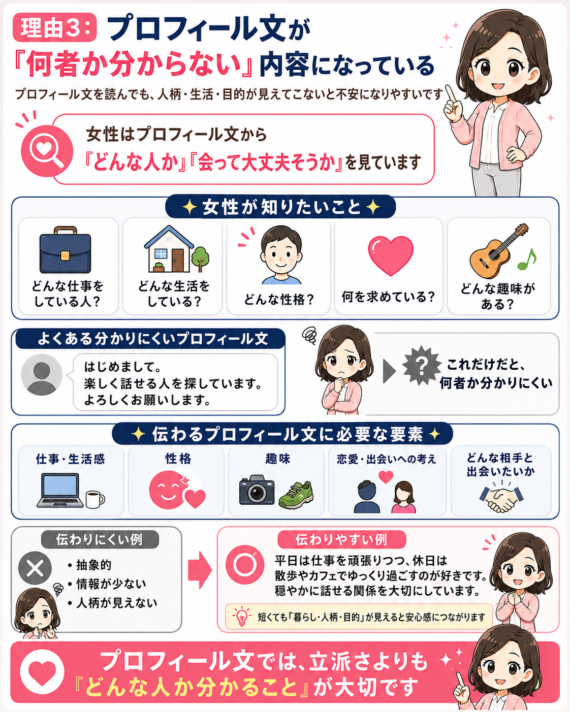
写真の次に見られるのがプロフィール文です。ここで多い失敗は、情報が少なすぎることです。
たとえば、「はじめまして。真剣な出会いを探しています。よろしくお願いします。」だけだと、悪い人には見えません。でも、女性からすると何も判断できません。
どんな性格なのか。休日は何をしているのか。一緒にいるとどんな時間になりそうなのか。会話のきっかけがあるのか。そういったことが分からないと、女性はいいねを押しにくくなります。
プロフィール文で大事なのは、自分を売り込むことではありません。女性が安心して話しかけられる材料を置いておくことです。
理由4：「若く見られます」「年齢より若いです」と書いて逆効果になっている
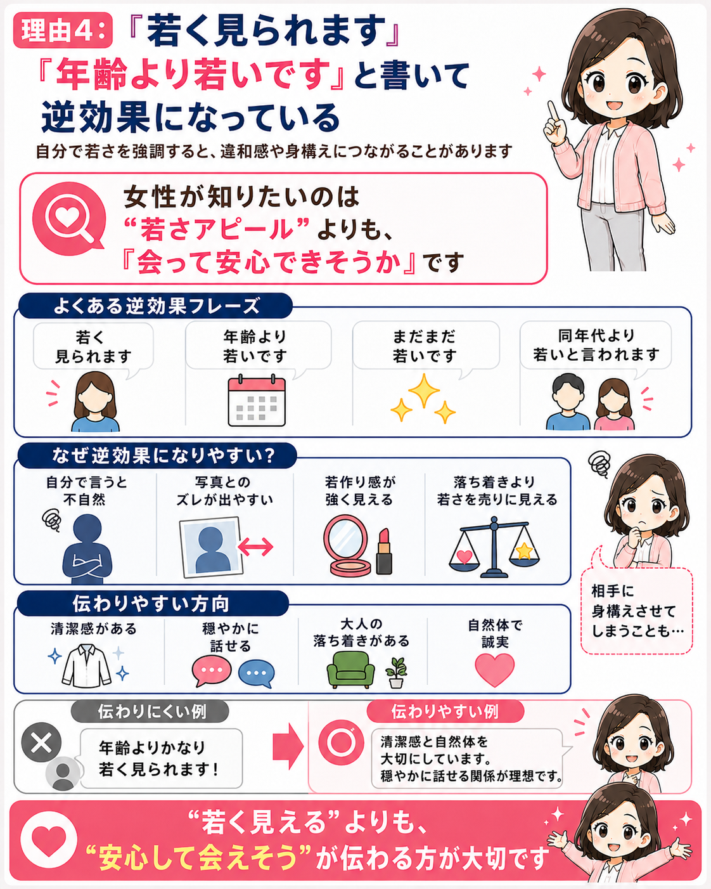
50代男性のプロフィールで意外と多いのが、「年齢より若く見られます」「気持ちは若いです」「実年齢より若いと言われます」という表現です。
もちろん、若く見られること自体は悪いことではありません。ただ、プロフィール文で自分から強調しすぎると、女性には少し違和感を持たれることがあります。
若々しさは、自分で説明するよりも、写真や雰囲気から自然に伝わるほうが強いです。50代男性が目指すべきなのは、20代・30代に見せることではありません。
理由5：相手への希望条件が現実とズレている
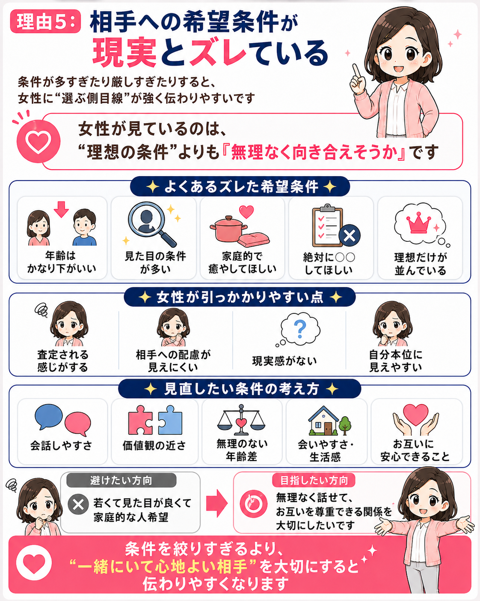
いいねがもらえない原因は、プロフィールの見せ方だけではありません。相手に求める条件が狭すぎる場合もあります。
たとえば、50代男性が20代・30代前半の女性ばかりにいいねを送っている場合、マッチング率はかなり下がります。もちろん、年齢差のある恋愛が絶対に無理ということではありません。
まずは、自分がどの年齢層の女性にアプローチしているのかを確認しましょう。同年代、40代女性、50代女性、価値観の合う女性まで視野を広げると、反応が変わることがあります。
理由6：メッセージが重い・長い・距離感が近すぎる
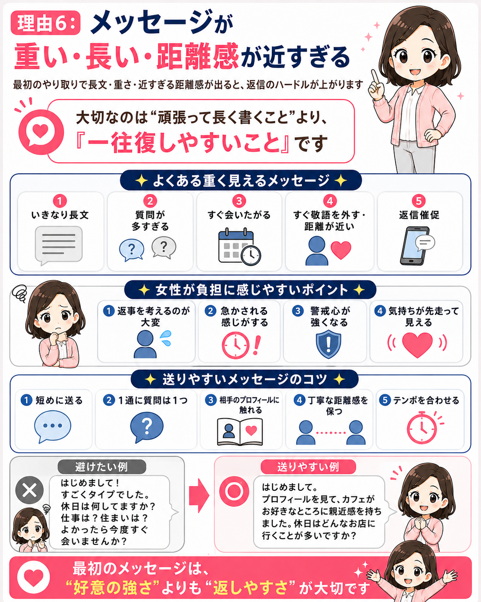
マッチングしても続かない場合は、メッセージの距離感に問題があるかもしれません。50代男性に多いのは、真面目に伝えようとするあまり、最初から文章が長くなりすぎることです。
最初はもっと軽くて大丈夫です。相手のプロフィールに触れて、短く質問するくらいのほうが、返信のハードルは下がります。大事なのは、最初から口説くことではありません。安心して会話できる空気を作ることです。
理由7：会話の前に“おじさんっぽさ”が伝わってしまっている
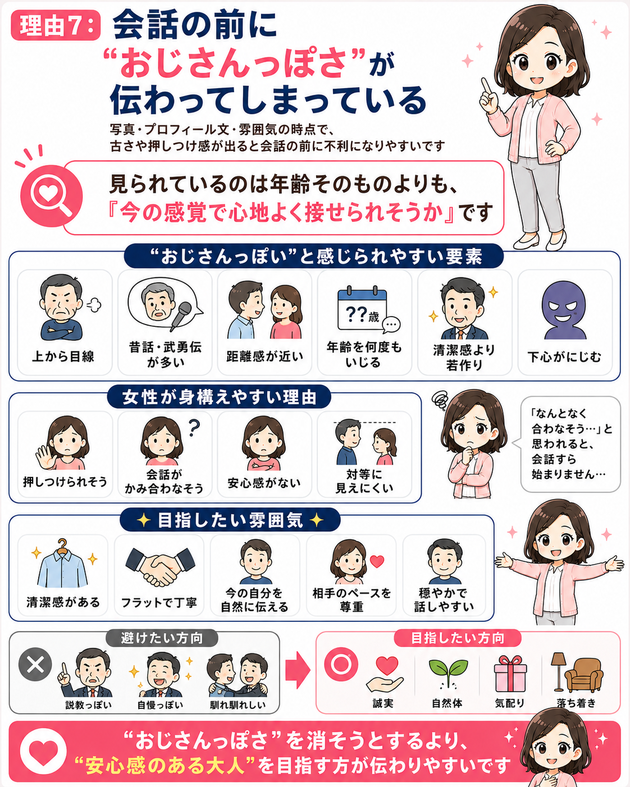
ここは少し率直に言います。50代男性がマッチングアプリで損をするとき、女性は年齢そのものよりも「おじさんっぽい雰囲気」に反応していることがあります。
- 上から目線に見える
- 説教っぽい
- 自分語りが長い
- 若い女性に対して距離感が近い
- 清潔感が薄い
- 写真や文章が古く見える
- 恋愛観が昔のまま止まっている
女性が避けたいのは、50代男性そのものではありません。一緒にいて疲れそうな人、気を遣いそうな人、距離感が合わなさそうな人です。年齢を消す必要はありません。ただ、年齢と一緒に出てしまう古さ・重さ・押しの強さを減らすことが大切です。
女性は50代男性のどこを見ているのか
 さくら
さくら
先生、50代男性がマッチングアプリで反応を得るには、女性がどこを見ているのかを知る必要がありますよね。
でも、多くの男性は「結局、顔が良くないとダメなんだろう」「年収が高くないと無理なんだろう」と考えがちです。
そうですね。もちろん、見た目や条件がまったく関係ないとは言いません。
ただ、50代男性の場合、それ以上に重要なのは、清潔感・安心感・余裕・会話のしやすさです。
まず見られるのは、顔立ちよりも「清潔感」ですね。
女性が最初に見ているのは、顔の造形だけではなく、髪型、肌、服装、姿勢、表情、写真全体の雰囲気です。
その通りです。たとえば、次のような部分が見られています。
- 髪が整っている
- 眉やひげが放置されていない
- 服のサイズが合っている
- シャツやニットがヨレていない
- 靴やバッグがくたびれていない
- 肌が脂っぽすぎない
- 表情が暗すぎない
こうした要素が合わさって、「この人は自分をちゃんと管理していそう」という印象になります。
50代男性にとって清潔感は、若さ以上に大事です。
次に見られるのは、「安心できそうか」ですよね。
女性はマッチングアプリで、知らない男性とやり取りする以上、少し警戒しています。
はい。女性は無意識に、「この人は安全そうか」「急に距離を詰めてこないか」「会っても嫌な思いをしなさそうか」を見ています。
50代男性の場合、ここで大切なのは落ち着きです。
無理に面白いことを言う必要はありません。強引にリードしようとしなくても大丈夫です。
さくら
さらに見られるのは、「一緒にいて疲れなさそうか」ですね。
恋愛や婚活では、条件だけではなく、「この人と一緒にいたらどんな時間になるか」が見られています。
その通りです。真面目さを伝えるのは大切ですが、真面目さが強すぎると、重く見えることがあります。
プロフィール文やメッセージには、ほどよい柔らかさが必要です。
休日の過ごし方、好きな食べ物、散歩、映画、旅行、カフェ、運動など、女性が会話を広げやすい話題を入れておくと、印象がやわらかくなります。
つまり、50代男性が目指すべきなのは、若さそのものよりも、落ち着き・余裕・生活感の整い方なんですね。
はい。50代男性がマッチングアプリでやるべきことは、20代の男性と同じ戦い方ではありません。
無理に若者言葉を使う必要はありません。流行りの服をそのまま真似する必要もありません。
必要なのは、大人としての整い方です。
清潔感がある、生活が安定していそう、会話が穏やか、相手を急かさない、自分の年齢を自然に受け入れている。こうした要素が伝わると、女性は安心します。
50代男性がやりがちなNGプロフィール
先生、プロフィールを見直していたら、ちょっと不安になってきました。
昔の写真も使っているし、車の写真もありますし、「もういい年ですが」みたいな文章も書いていました……。
ひえー、もしかして全部やってしまっているかもしれません。
大丈夫です。気づけた時点で、もう一歩前進しています。
プロフィールは、才能ではなく「整え方」でかなり印象が変わります。
そうですね。まず落ち着いて、ひとつずつ見直していきましょう。
50代男性のプロフィールでよくあるNGは、本人に悪気がないことが多いです。
ただ、女性側から見ると「会う前に少し不安になる見え方」になっていることがあります。
まず1つ目は、昔の写真を使っていることです。
5年前、10年前の写真を使っている人は注意が必要です。
うっ……。昔の写真の方が若く見えるし、写りも良いんですよね。
今の写真より、そっちの方が反応が良いんじゃないかと思っていました。
その気持ちは分かります。
でも、実際に会ったときに写真とのギャップが大きいと、女性は不信感を持ちます。
多少老けて見えても、今の自分を清潔に整えた写真を使う方が誠実です。
目安としては、できれば半年以内、長くても1年以内の写真が理想です。
2つ目は、車・時計・高級店アピールが強すぎることです。
経済力や人生経験を伝えたい気持ちは分かりますが、見せ方を間違えると逆効果になることがあります。
えっ、車や時計の写真もダメなんですか？
ちゃんとした大人に見えるかなと思って載せていました。
車や時計そのものが悪いわけではありません。
ただ、多すぎたり、前面に出しすぎたりすると、「自慢っぽい」「お金で釣ろうとしている」と受け取られることがあります。
大切なのは、所有物ではなく、その人の雰囲気です。
高級感を出すよりも、自然な日常、清潔感、穏やかな表情を見せる方が伝わりやすいことがあります。
3つ目は、自虐や諦めが文章に出ていることです。
「もういい年ですが」「おじさんですが」「こんな自分でもよければ」などですね。
それ、完全に書いていました……。
謙虚に見せた方がいいかなと思っていたんです。
謙虚さは大切です。
でも、自分を下げすぎると、女性は反応しづらくなります。
自虐は、相手に気を遣わせてしまうんです。
50代男性がプロフィールで出すべきなのは、卑屈さではなく、落ち着きです。
4つ目は、「真剣です」が重く見えてしまうことです。
真剣な出会いを探していること自体は、とても大切です。
これも心当たりがあります。
「結婚を前提に」「人生の最後のパートナーを」みたいに書いた方が、真剣さが伝わると思っていました。
真剣さは伝えていいです。
ただ、プロフィールの最初から強く書きすぎると、読む側には重く感じられる場合があります。
たとえば、こういう表現の方が柔らかいです。
「まずは穏やかにやり取りしながら、お互いを知っていけたら嬉しいです。」
このくらいなら、真剣さと安心感の両方が伝わります。
5つ目は、相手に求める条件ばかり書いていることです。
希望条件を書くこと自体は悪くありませんが、多すぎると「選ぶ側」の印象が強くなります。
ひえー……。
年齢、住んでいる場所、価値観、結婚観、性格の希望まで、けっこう書いていました。
条件を書いた方がミスマッチが減ると思っていたんです。
条件を書くこと自体は悪くありません。
ただ、女性は条件表を見たいのではなく、「この人と話したらどんな感じかな」を知りたいんです。
希望を書くなら、短く柔らかくで十分です。
「穏やかに会話できる方と、少しずつ仲良くなれたら嬉しいです。」
このくらいの方が、押しつけ感が少なく、安心して読まれやすくなります。
つまり、NGプロフィールは「性格が悪いから」ではなく、見せ方が少しズレているだけなんですね。
昔の写真、自慢に見える写真、自虐、重すぎる真剣さ、条件の並べすぎ。
このあたりを整えるだけでも、かなり印象は変わります。
ちょっと安心しました。
全部ダメというより、直せるところが見つかった感じですね。
その通りです。
プロフィールは、今の自分を下げる場所ではありません。
今の自分を、女性に安心して見てもらえる形に整える場所です。
焦らず、ひとつずつ直していきましょう。
いいねをもらえる50代男性は、何を整えているのか
先生、NGプロフィールはかなり心当たりがありました……。
でも逆に、いいねをもらえている50代男性は、何を整えているんでしょうか？
そこ、大事ですね。
いいねをもらえる50代男性は、若作りをしているというより、女性が安心して見られるように「見え方」を整えています。
その通りです。
まず整えるべきなのは、写真です。
50代男性の写真で目指すべきなのは、若く見せることではありません。
「清潔感がある」「安心できそう」「自然に話せそう」と思われることです。
ふむふむ。
若く見せる写真じゃなくて、清潔感と自然さが伝わる写真ですね。
それなら、自分でも改善できそうな気がします。
写真で意識したいのは、たとえばこのあたりです。
- 明るい自然光で撮った写真
- 顔がはっきり分かる写真
- 清潔感のある服装
- 少し笑顔の写真
- カフェ、公園、街歩きなど自然な背景
- 趣味や日常が伝わるサブ写真
次に整えたいのは、服装です。
服装は、高級ブランドである必要はありません。
大切なのは、サイズ感と状態です。
肩幅が合っている、着丈が長すぎない、ヨレていない、シワが目立たない、靴が汚れていない。
これだけでも、写真の印象は大きく変わります。
なるほど……。
高い服を買えばいいわけじゃなくて、サイズが合っていて、清潔に見えることが大事なんですね。
これはかなり現実的です。
そうです。
「高級感」よりも、「ちゃんと整えている感じ」の方が、安心感につながりやすいです。
次は、プロフィール文です。
プロフィール文では、年収・仕事・離婚歴・真剣度などを並べるだけではなく、人柄が伝わるようにすることが大切です。
休日の過ごし方、好きな食べ物、よく行く場所、最近楽しんでいること、どんな会話が好きか。
こうした情報があると、女性はあなたとの時間をイメージしやすくなります。
ふむふむ、スペックを並べるだけでは足りないんですね。
「この人と話したらどんな感じか」が伝わる方がいい、と。
たしかに、読む側からするとその方が安心できそうです。
プロフィールには、会話の入口になる情報も入れておきたいですね。
たとえば、散歩、カフェ、運動、旅行、映画などです。
相手が質問しやすい話題があると、やり取りが自然に始まりやすくなります。
なるほど、会話の入口ですね。
「よろしくお願いします」だけじゃなくて、相手が話しかけやすい材料を置いておくわけですね。
そうです。
最後に、メッセージの整え方です。
最初のメッセージで、いきなり口説いたり、好意を強く出したりする必要はありません。
相手のプロフィールに触れて、短く、返しやすい質問をひとつ置く。
これだけで、返信のしやすさはかなり変わります。
ふむふむ、口説くよりも、安心して返せる空気を作るんですね。
いきなり距離を詰めるより、短く返しやすくする方が大事なのか……。
これはかなり納得です。
まとめると、いいねをもらえる50代男性は、特別なことをしているわけではありません。
写真、服装、プロフィール文、趣味の見せ方、メッセージの距離感。
この5つを、女性が安心して見られる形に整えているんです。
その通りです。
50代男性に必要なのは、若者の真似ではありません。
今の自分を、清潔に、自然に、安心して伝わる形に整えることです。
そこから、出会いの入口は少しずつ変わっていきます。
50代男性がまず見直すべき5つのポイント
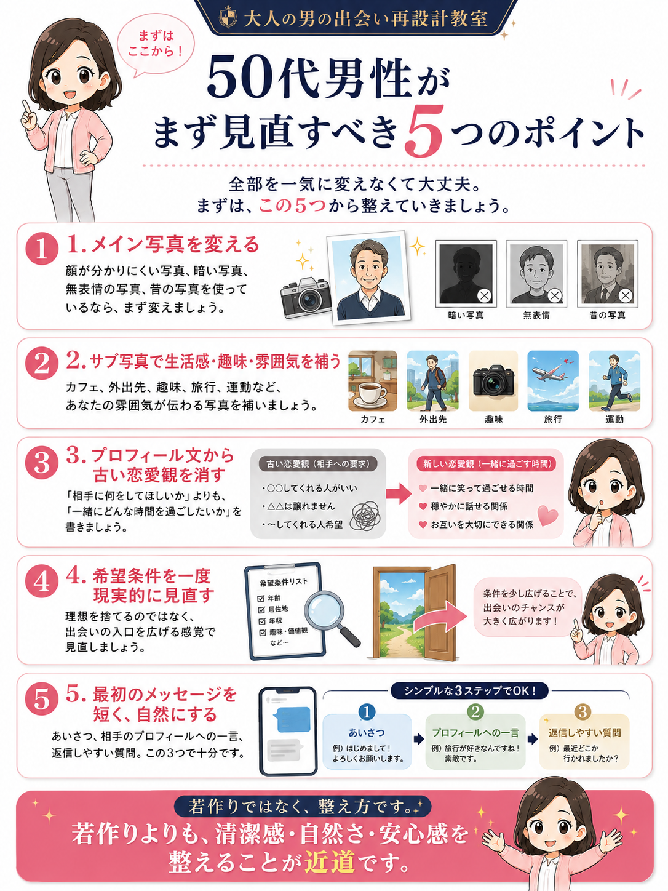
- 1. メイン写真を変える顔が分かりにくい写真、暗い写真、無表情の写真、昔の写真を使っているなら、まず変えましょう。
- 2. サブ写真で生活感・趣味・雰囲気を補うカフェ、外出先、趣味、旅行、運動など、あなたの雰囲気が伝わる写真を補いましょう。
- 3. プロフィール文から古い恋愛観を消す「相手に何をしてほしいか」よりも、「一緒にどんな時間を過ごしたいか」を書きましょう。
- 4. 希望条件を一度現実的に見直す理想を捨てるのではなく、出会いの入口を広げる感覚で見直しましょう。
- 5. 最初のメッセージを短く、自然にするあいさつ、相手のプロフィールへの一言、返信しやすい質問。この3つで十分です。
50代男性向け・プロフィール改善の具体例
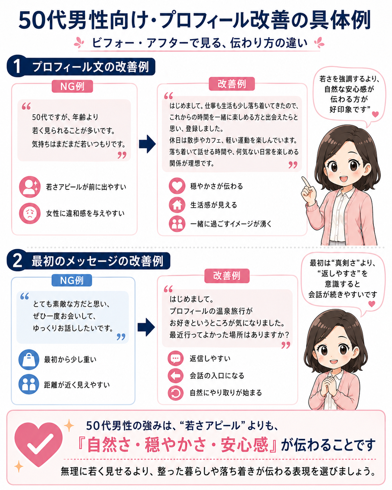
NG例：年齢より若く見られることを強調する文章
「50代ですが、年齢より若く見られることが多いです。気持ちはまだまだ若いつもりです。」という文章は、若く見られたい意識が前に出すぎて、女性から見ると違和感につながることがあります。
改善例：穏やかさ・生活感・一緒に過ごすイメージを伝える文章
はじめまして。仕事も生活も少し落ち着いてきたので、これからの時間を一緒に楽しめる方と出会えたらと思い、登録しました。
休日は散歩をしたり、気になったカフェに入ったり、体調管理のために軽く運動したりしています。派手なことよりも、落ち着いて話せる時間や、何気ない日常を楽しめる関係が理想です。
この文章では、若さをアピールしていません。でも、生活が整っていること、穏やかさ、無理のない距離感が伝わります。50代男性には、こういう自然な安心感が強みになります。
NG例：いきなり距離を詰めるメッセージ
「とても素敵な方だと思い、ぜひ一度お会いして、ゆっくりお話ししたいです。」という文章は、悪気はなくても、最初のメッセージとしては少し重く見える可能性があります。
改善例：相手が返信しやすいメッセージ
はじめまして。プロフィールの温泉旅行がお好きというところが気になりました。最近行ってよかった場所はありますか？
このくらいのほうが自然です。最初は、自分の真剣度を伝えるよりも、相手が返しやすい会話を作ることが大切です。
いいねが来ないときに、年齢のせいにする前に確認したいチェックリスト
写真のチェック
- メイン写真は明るい場所で撮れているか
- 顔がはっきり分かるか
- 無表情で怖く見えていないか
- 服装に清潔感があるか
- 自撮り感が強すぎないか
- 昔の写真を使っていないか
- サブ写真が3〜5枚入っているか
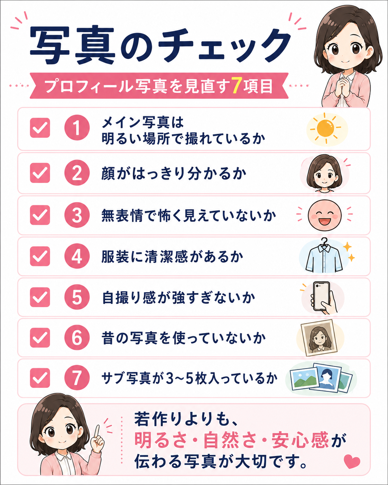
清潔感のチェック
- 髪型は整っているか
- 眉やひげが放置されていないか
- 服がヨレていないか
- 靴やバッグがくたびれていないか
- 肌が脂っぽく見えていないか
- 姿勢が悪く見えていないか
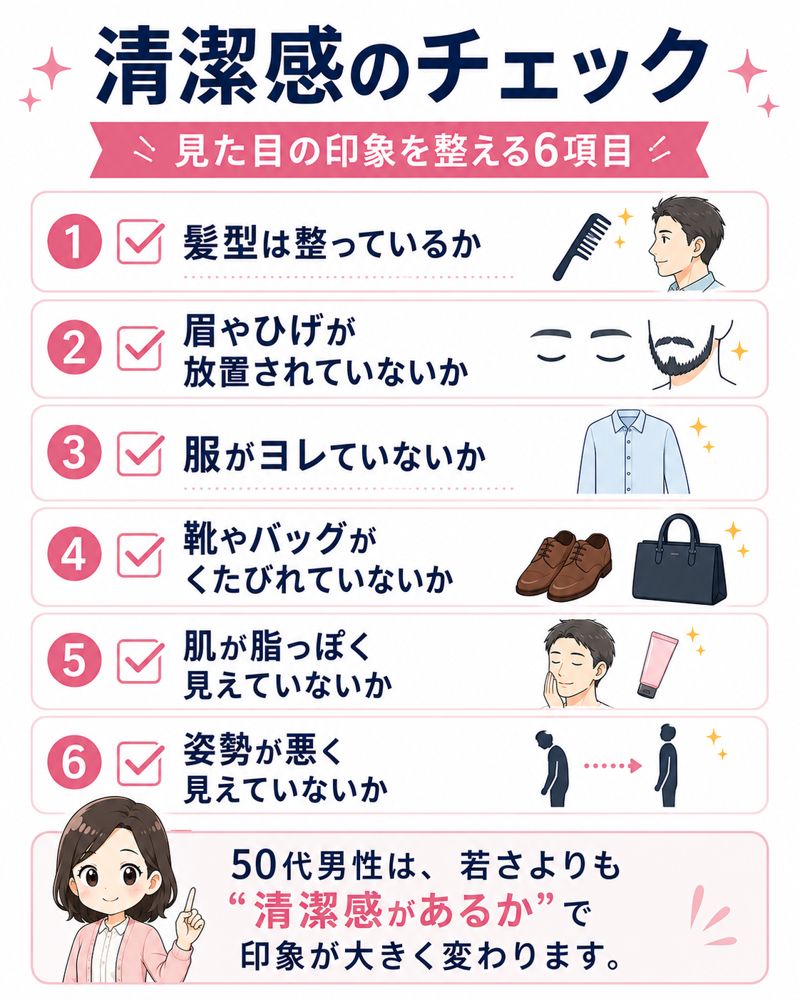
プロフィール文のチェック
- 自分がどんな人か伝わるか
- 休日の過ごし方が書かれているか
- 会話のきっかけがあるか
- 自虐が入っていないか
- 若く見られるアピールをしすぎていないか
- 相手への条件ばかり書いていないか
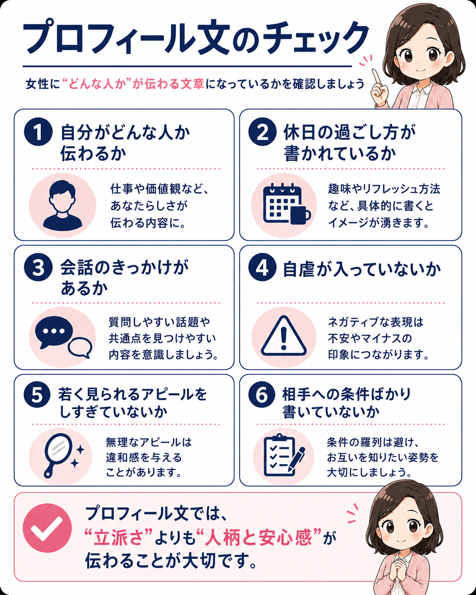
メッセージのチェック
- 最初から長文になっていないか
- いきなり会おうとしていないか
- 褒め方が外見に偏っていないか
- 説教や自分語りになっていないか
- 相手が返信しやすい質問になっているか
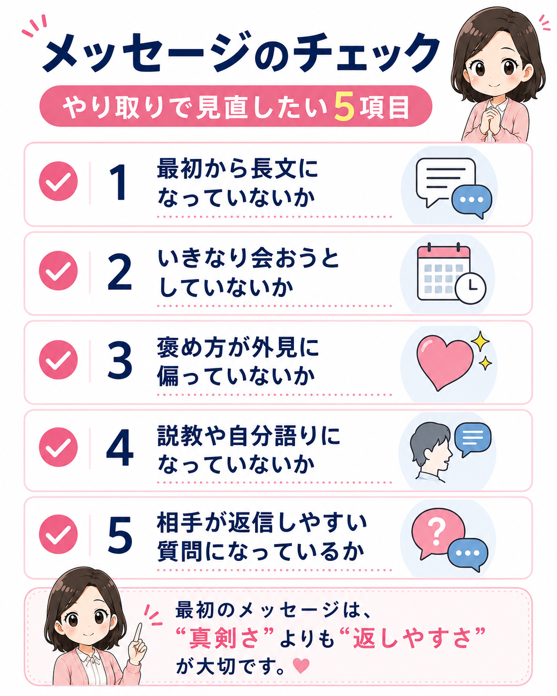
50代男性のマッチングアプリは「若返り」ではなく「伝わり方の再設計」が必要
50代男性がマッチングアプリで反応を得るために必要なのは、若作りではありません。20代・30代の男性に見せようとする必要はありません。無理に流行を追う必要もありません。過度な加工で若く見せる必要もありません。
大切なのは、今の自分を女性に伝わりやすい形に整えることです。同じ50代でも、見せ方によって印象は大きく変わります。
写真が暗く、プロフィール文が雑で、メッセージが重ければ、女性は不安を感じます。一方で、写真に清潔感があり、文章に人柄があり、メッセージの距離感が自然なら、女性は安心してやり取りしやすくなります。
これは、自分を偽ることではありません。本来の魅力が伝わるように、見せ方を整えるということです。大人の男性に必要なのは、若さの演出ではなく、清潔感・安心感・余裕です。
まとめ｜50代男性がいいねをもらえない理由は、年齢だけではない
先生、ここまで読んでみて、少し分かってきました。
いいねが来ないと、つい「やっぱり50代だから無理なのかな」と思ってしまうんですけど、年齢だけが原因ではないんですね。
その通りです。
たしかに、マッチングアプリでは年齢が影響する場面はあります。そこは無理にごまかす必要はありません。
でも、いいねが来ない理由をすべて「年齢のせい」にしてしまうと、本当は変えられる部分まで見えなくなってしまいます。
見直せるところは、たくさんあります。
写真で清潔感が伝わっているか、プロフィール文に人柄が出ているか、メッセージが重くなりすぎていないか。
そういう部分を少し整えるだけでも、女性からの見え方は変わっていきます。
なるほど……。
若く見られることばかり気にするより、まずは「安心して話せそう」と思ってもらえることが大事なんですね。
はい。50代男性が目指すべきなのは、20代や30代の男性と同じ戦い方ではありません。
大切なのは、50代であることを否定することではなく、50代の男性として魅力が伝わる形に整えることです。
若作りではなく、清潔感。押しの強さではなく、安心感。自慢ではなく、人柄。若さの勝負ではなく、大人の余裕です。
いいねが来ないときこそ、「自分はもう無理だ」と決めつけないでください。
写真、清潔感、プロフィール文、メッセージの見せ方を一つずつ整えれば、出会いの入口はまだ作れます。
全部を一気に変えなくても大丈夫です。まずは、メイン写真を変える。プロフィール文を少し直す。最初のメッセージを短くする。そこからで十分です。
ふむふむ、少し希望が持ててきました。
年齢を若く見せようとするより、今の自分をちゃんと整えて伝える。
それなら、自分にもできそうです。
その感覚で大丈夫です。
50代だから終わり、ではありません。伝わり方を整えれば、まだまだ出会いの可能性はあります。
大人の男性としての落ち着きや誠実さは、きちんと見せ方を整えれば強みになります。
まずは、できるところから一つずつ整えていきましょう。
写真を明るくする。服を整える。プロフィールに人柄を入れる。メッセージを返しやすくする。
その積み重ねが、「この人なら話してみたい」という印象につながっていきます。
自分にも当てはまるかも、と思った方へ
一人で悩まず、まずはプロフィールの「見え方」を一緒に整理しましょう
「どこから直せばいいか分からない」「自分のプロフィールが女性にどう見えているのか知りたい」 そう感じた方は、写真・プロフィール文・メッセージの見せ方を一度整理してみるだけでも、改善点が見えやすくなります。
大人の男の出会い再設計教室では、若作りではなく、清潔感・安心感・人柄が伝わる形へ整えるお手伝いをします。 先生役の視点と、女性目線のさくらの視点から、あなたのプロフィールがどう見えているかを一緒に確認していきます。
- 写真の印象に清潔感や安心感があるか
- プロフィール文で人柄や会話のきっかけが伝わっているか
- 最初のメッセージの距離感が重く見えていないか
- 女性から見たときに違和感が出ていないか
いきなり完璧に変える必要はありません。まずは、今の見え方を知るところから始めていきましょう。
プロフィール改善サポートを見る